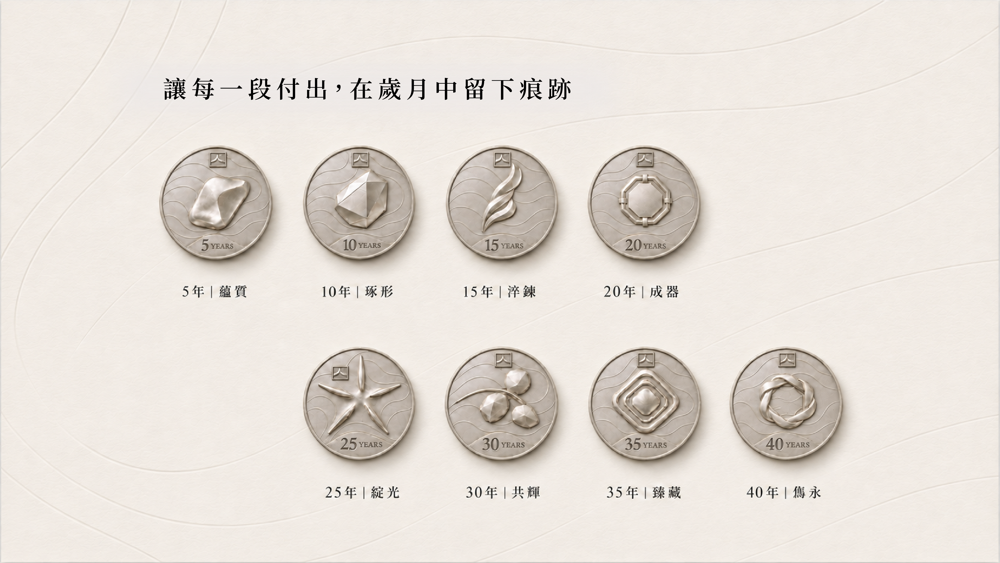

形態，映照成長
從有機曲面到交織環形，每一個造型，都為不同年資賦予自己的表情。
以金屬承載時間，以紋理記錄累積。
從初始的蘊質，到歷經淬鍊的雋永，八種形態，描繪每一段值得被珍藏的職涯旅程。

米白紙材的溫潤，襯托銀色勳章的光澤。
波紋以凹壓延伸至盒蓋與卡片，深綠內襯承接每一份榮耀，讓開盒也成為一場鄭重的致意。

從有機曲面到交織環形，每一個造型，都為不同年資賦予自己的表情。
連續的波紋成為系列共同的語言，貫穿勳章、紙盒與卡片。
讓授予的片刻，延伸為可以觸摸、可以珍藏的紀念。